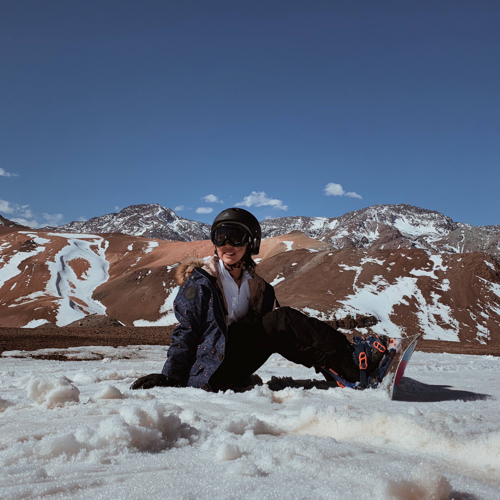
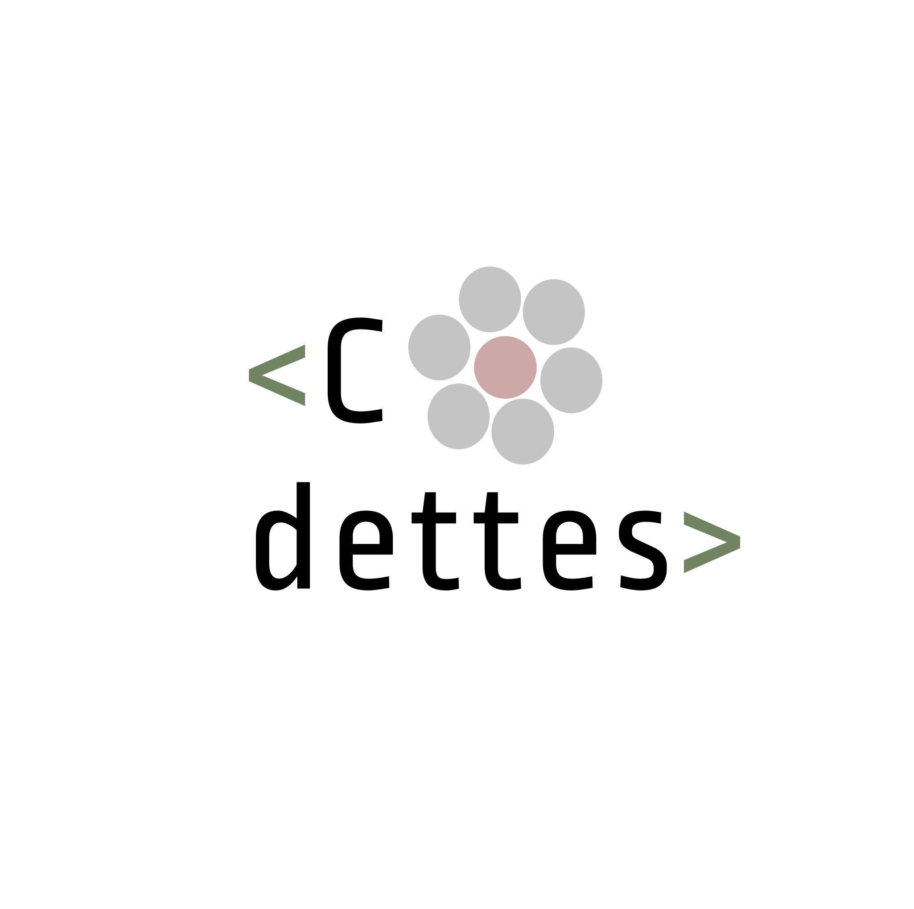

Hi, I'm Miki !
I am a Japanese highschool student living in Santiago, Chile: born in Lima, Peru.
Due to my father's occupation I have moved my entire life: Japan, Nepal, Costa Rica, Chile.
Each country is distict with unique qualities of it's own, the life, the people, geograhic landscapes, culture, etc...
I am so gratiful that I am able to see, meet, and experience these countries with my family.
At times moving was difficult because I had a predominant skin condition (eczema / atopic-dermatitis) since I was born for 17 years(2020).
Only recently did it purge, and I wrote about my struggles and how life looked like each painful night against eczema,
here.
Without my loving and supportive family, I wouldn't have been able to be the person I am today, they mean a lot a lot to me.
Currently, quarentine gave me a chance to sit, think, and research about something I had never comtemplated about... future careers. My thought process in much brevity -->
First and foremost, I wanted to help the natural environment from the surging global warming. Second, I was always interested in whales and the ocean ecosystem.
Third, I didn't want a sendentary job. Afterdays, I deviated my future plans from business to marine biology, because I hadn't realized how passionate I was about saving marine life.
That's a little about my life.
MY PERSONAL INTERESTS
Basketball

I enjoy playing basketball a lot, especially the gratification after each shot that you make. I am no means a good basketball player, however, I think endeavoring on something your passionate about will create improvements. I started playing in middle school. In freshmen year, I was in lowest team out of 3, Junior Varsity B team. I went to my first JV SAAC Basketball tournament, which was very challenging and bad for me. However, I continued to preseaver and I was able to recieve the "Most Improved Player in the JV B Girls Basketball" award. On top of that, in sophmore year I got into JV A team, and was selected for SAAC 2020. Unfortunately, due to the situation with COVID-19, it was cancelled. Yet, I felt great gratification as I thought my ambition to practice showed results of improvement. Playing basketball with your team, your friends, and even yourself is so much fun and teaches you a lot: communication, teamwork, more...
Snowboarding
I joined the school Ski Club in freshmen year, as I had never skied or snowboarded in my entire life. It was a perfect oppurtunity in Chile, with the blinding white snow covering the Andes. I enjoyed this new experience; adrenaline running through my body, wind blowing into my face, the pain from falling, and more... are all estatic. I'm still awkward in the slopes, I would love to go back and try improving a bit more.
Cooking/ Baking

My love for food has grown to me making my own food and desserts. I love trying to make new things and experiementing with it, and sharing them with my parents. My mom cooks the BESTTTT, and I want to cook like her. She doesn't really follow rescpies and she seasons everything with her tongue, as in random.
Coding
I started coding from my brothers influence, and joined the "girl's who code" club. My only project is this website.
Other
I enjoy playing my ukulele as well, and taking photos. This is my gallery page, here.
 _miki.kimura
_miki.kimura